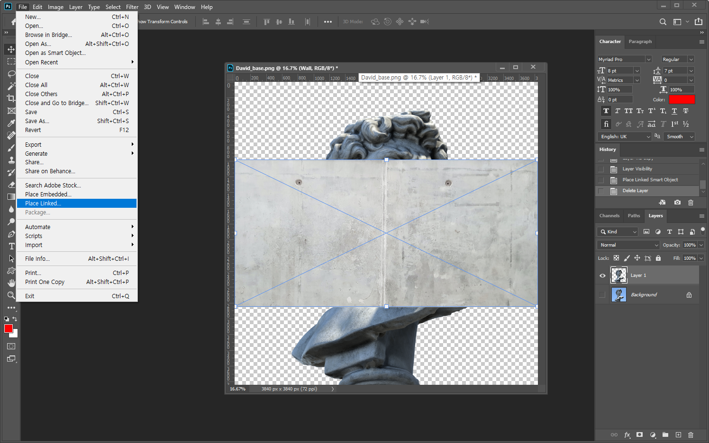
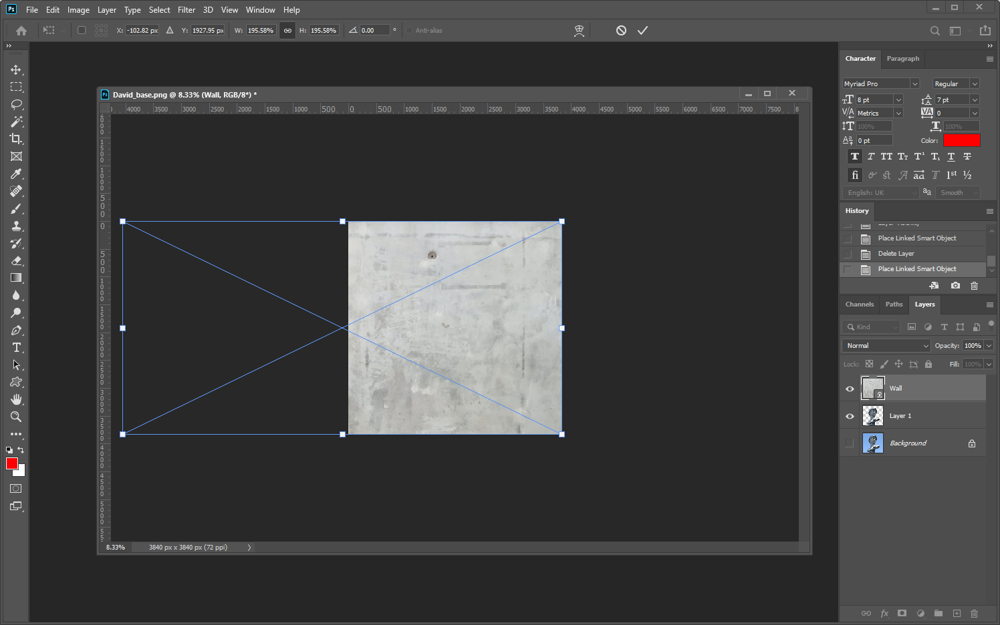
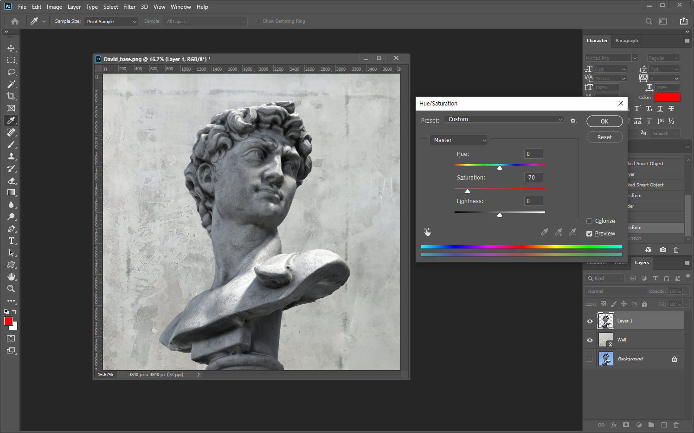

photoshop
스케치 텍스트 효과
David_base.png, Wall.jpg
마술봉툴, Hue/Saturation
마술봉툴, Hue/Saturation
완성
작업 순서
Step 1
새파일을 80 x 80px로 열고 전경색은 로 설정한다.
Window 메뉴의 "Brush Settings"패널을 열어서 아래의 이미지와 같이 설정하고 "Brush" 툴을 선택한다
Shape Dynamics 설정 :
Step 2
새 레이어를 추가하고 ( + + )브러쉬 툴을 이용하여 대각선 방향으로 칠한다
Step 3
백그라운드 레이어의 눈 아이콘을 클릭하여 안 보이게 설정하고 Edit 메뉴의 Define Pattern 메뉴를 선택하여 "Fill"이란 이름으로 패턴을 등록한다.
Step 4
새파일을 1000 x 750px로 열고
Step 5
바운딩 박스를 이용하여 이미지 사이즈를 크게 조절한 후 를 누른다.
Step 6
벽 이미지를 드래그 하여 다비드상 레이어 아래로 이동한다.

Step 7
다비스상 레이어를 선택해서 Image > adjustment > Hue/Saturation 메뉴를 선택한다.

Step 8
Saturation 부분의 값을 -70으로 조절한다
